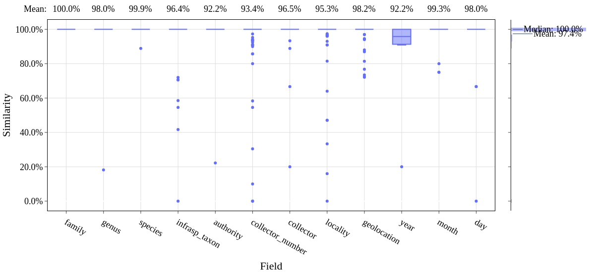
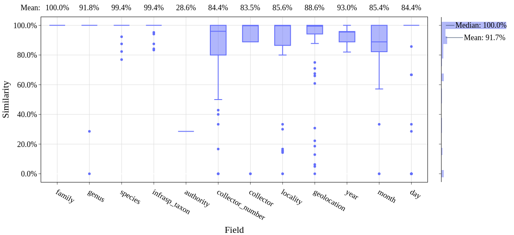
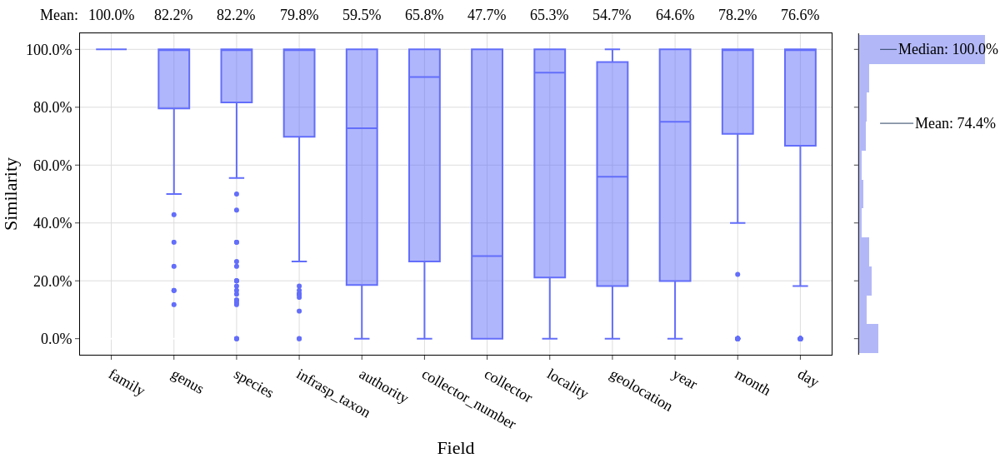

Reproducing Test Results
This document describes how to reproduce the results of the paper.
Make sure you have installed hespi.
The results in the paper use the default LLM which is ChatGPT (gpt-4o).
Make sure you have credit with OpenAI and have set the OPENAI_API_KEY environment variable.
The test data for the paper is available at https://doi.org/10.26188/25648902 This can be downloaded as follows:
wget https://figshare.unimelb.edu.au/ndownloader/articles/25648902/ -O hespi-test-data.zip
unzip hespi-test-data.zip
Install the requirements as follows:
pip install -r requirements.txt
There are three test datasets:
The MELU Print/Typewriter Data (100 images in MELU-T.csv)
The MELU Handwritten Data (100 images in MELU-H.csv)
The DILLEN Data (100 images in DILLEN.csv)
The MELU Print/Typewriter Data
To reproduce the results for the MELU Print/Typewriter Data, run the following commands:
for URL in `tail -n+2 MELU-T.csv | cut -f1 -d,`; do
hespi $URL --output-dir MELU-T-results
done
That will download each of the images and run them through the hespi pipeline.
The results will include a CSV file at MELU-T-results/results.csv.
Evalulate this with the test annotations as follows:
python3 ./evaluate.py MELU-T.csv MELU-T-results/hespi-results.csv --output-csv MELU-T-results/MELU-T-evaluation.csv --output-fig MELU-T-results/MELU-T-evaluation.png
That will produce an image like this:
The similarity measure uses the Gestalt (Ratcliff/Obershelp) approach and is a percentage similarity between the each pair of strings. Only fields where text is provided in either the test dataset or the predictions are included in the results. If a field is present in either the test dataset or the predictions but not the other then the similarity is given as zero. All non-ASCII characters are removed. By default the results are not case-sensitive. If you wish to evaluate with case-sensitive comparison, then use the –case-sensitive option on the command line. The output of the script will also provide the accuracy of the label classification and the whether or not any particular field should be empty.
The MELU Handwritten Data
To reproduce the results for the MELU Handwritten Data, run the following commands:
for URL in `tail -n+2 MELU-H.csv | cut -f1 -d,`; do
hespi $URL --output-dir MELU-H-results
done
python3 ./evaluate.py MELU-H.csv MELU-H-results/hespi-results.csv --output-csv MELU-H-results/MELU-H-evaluation.csv --output-fig MELU-H-results/MELU-H-evaluation.png
That will produce an image like this:
The DILLEN Data
To reproduce the results for the DILLEN Data, run the following commands:
for URL in `tail -n+2 DILLEN.csv | cut -f1 -d,`; do
hespi $URL --output-dir DILLEN-results
done
python3 ./evaluate.py DILLEN.csv DILLEN-results/hespi-results.csv --output-csv DILLEN-results/DILLEN-evaluation.csv --output-fig DILLEN-results/DILLEN-evaluation.png
That will produce an image like this:
Other options
If you wish to run the pipeline without an LLM, then you can add --llm none to the command line arguments of Hespi.
The evaluation script has a number of options. See them with this command:
./evaluate.py --help